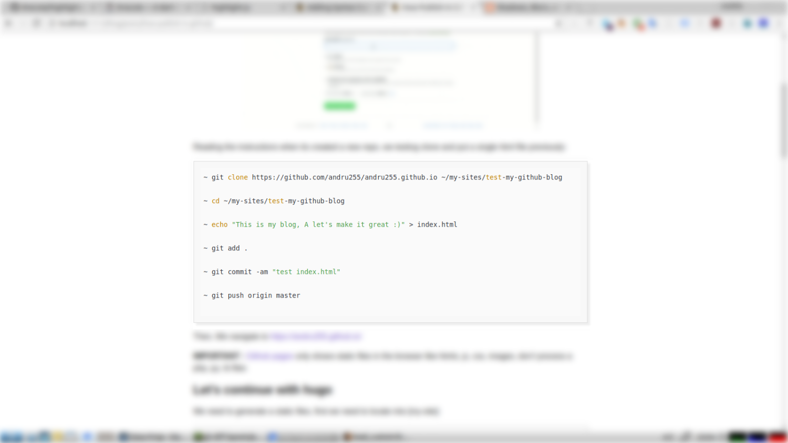
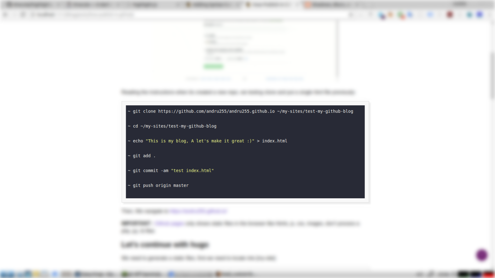

Hi, many of my tutorials needs to hightlight the instrucctions code or commands on markdown, starting and ending a block with ``` create a block of code with the highlighter plugin.
For example, on my blog, when I writing with markdown code shows:

It’s so simply, following this steps:
In my case I founded a default highlight into the head html tag in the file ~/mysites/andru255.github.io/themes/hugo-classic/layouts/partials/head_custom.html
<link rel="stylesheet" href="//cdnjs.cloudflare.com/ajax/libs/highlight.js/9.12.0/styles/atom-one-light.min.css">
And I remove that code with a great highlighter called drakula, following in the oficial page I put that code instead of atom-one-light
<link rel="stylesheet" href="//cdnjs.cloudflare.com/ajax/libs/highlight.js/9.12.0/styles/dracula.min.css">
Before submit my changes, I test before on localhost following the steps of getting up a local hugo server
Then, I need to build and submit my changes to my repo:
~ cd ~/my-sites/andru255.github.io/
~ hugo -D
~ git commit -am "feat(updating-the-theme): dracula hightlight syntax code theme"
And must be show in a tab of your favorite browser like this:
